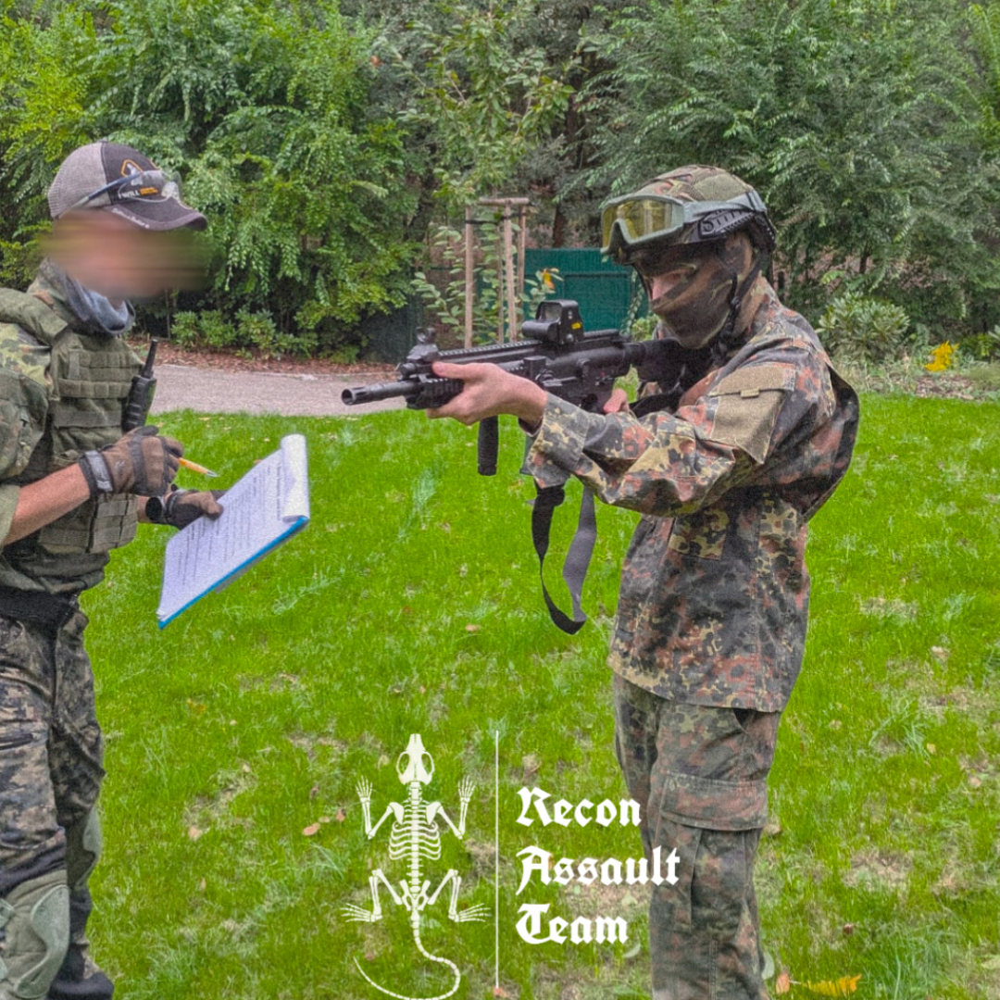
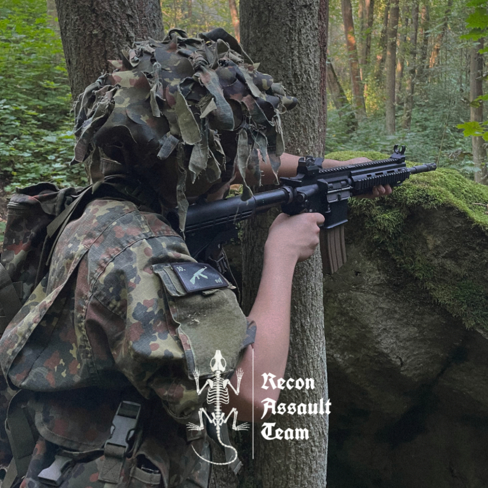

"Memento Mori"
About RAT PMC
RAT PMC is a Czech-based community focused on teamwork, field skills, and realistic training.
What started as a small airsoft group has grown into a structured environment where members aim to improve, not just play.
We combine airsoft, fieldcraft, and practical preparedness. The goal is simple:
build people who can operate in a team, understand terrain, and adapt to different situations.
The community is open to like-minded people,
but operational roles are earned through participation and effort.
The unit is structured into regional detachments
How we train/operate
RAT PMC focuses on practical, repeatable skills
that improve both individual performance and team coordination in the field.
Training is built around movement, communication, and working with terrain.
Every activity has a purpose — not just to play, but to understand what works, and how to improve.
We don’t aim to imitate military units. The goal is to build a team that can think, adapt, and operate effectively in different situations.
Progress comes through consistency, not complexity.

Alpha Detachment
Alpha Team operates in the Pardubice region and is focused on building a solid foundation. As a smaller unit, it emphasizes basic skills like movement, communication, and teamwork.
The goal is steady improvement and reliability — not specialization too early.

Bravo Detachment
Bravo Team operates in the Prague West region and is currently the most active operational element.
It focuses on general-purpose capability, combining movement, coordination, and decision-making in the field.
While not limited to one role, Bravo places strong emphasis on observation, terrain awareness, and acting based on information, not guesswork.

Our Path
Founded in Prague, RAT PMC has evolved from a small airsoft team into a structured unit ] with multiple detachments across the Czech Republic.
- June 2022 – 10.SOF Brigade (Bravo Detachment) was established
- July 2025 – RAT PMC founded
- August 2025 – 10.SOF Brigade integrated into RAT PMC and became the Bravo Detachment
Join Us
RAT PMC is open to individuals who want to improve, train, and operate as part of a team. Commitment and willingness to learn matter more than experience.
Apply Now